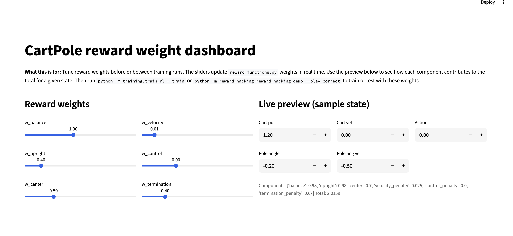
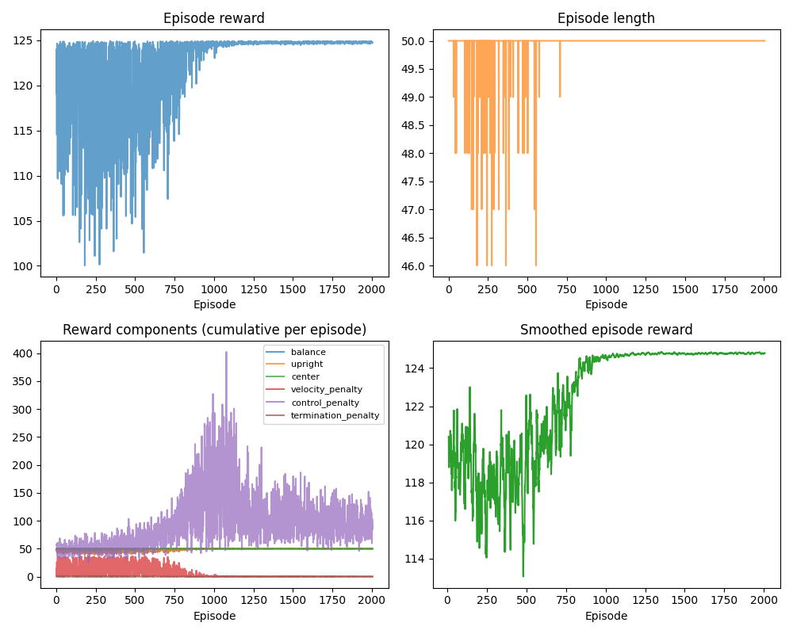

1. Open Loop Control
In open_loop.py the force applied to the cart depends only on time, not on the state (cart position, pole angle, etc.):
python -m problem_setup.open_loop to see it.# From open_loop.py: control is u(t) = amp * sin(2*pi*freq*t)
if state["mode"] == "script" and step % action_repeat == 0:
u = amp * np.sin(2 * np.pi * freq * data.time)
data.ctrl[0] = u
mujoco.mj_step(model, data)
The same cartpole.xml and stepping logic (mj_step) are used. This verifies physics and timing before adding RL.
2. Why Open Loop Fails
Open-loop control cannot stabilize the pole: it does not react to the current state. The pole will fall. To balance, we need feedback: observe state → choose action → repeat. That is what the RL policy learns.
Code lives in problem_setup/ (environment, rewards, open-loop), training/ (this tutorial, PPO), reward_hacking/, and results/. Run all commands from mujoco_cartpole/.
To balance the pole, the cart must move back and forth. This motion keeps it upright. The policy learns that if the pole leans right, then push cart right. If the pole passes upright, then slow down, and if the pole leans left then push cart left. You end up with small oscillations around the center of the cart.
↓
detect pole falling
↓
move cart under pole
↓
pole stabilizes
3. Reinforcement Learning Setup
Install dependencies for the RL portion. From the mujoco_cartpole directory, with your venv activated:
pip install -r requirements_rl.txt
That gets you Gymnasium, Stable-Baselines3 (PPO), Streamlit (reward dashboard), and matplotlib. You need these before running train_rl.py, reward_dashboard.py, or reward_hacking_demo.py.
The RL loop:
Same MuJoCo model, wrapped in Gymnasium, with a reward function and PPO from Stable-Baselines3.
4. Environment Design
env_cartpole_rl.py wraps cartpole.xml and exposes:
- Observation: cart_position, cart_velocity, pole_angle, pole_angular_velocity
- Action: continuous force on the cart (same as
data.ctrl[0]in open_loop) - Termination: pole angle too large, cart out of bounds, or max episode length
You can tweak max_episode_steps, initial_state_noise, and termination thresholds in the env.
5. Reward Function Design
The reward tells the agent what to optimize. If it's poorly designed, the agent will learn the wrong behavior (see the reward hacking demo). We decompose the reward into interpretable components so you can see what drives learning and tune weights without guessing. Each component has a clear meaning: balance rewards the pole being upright, center rewards the cart staying near the middle, and the penalties discourage jerky motion and excessive force.
Rewards are split into components in reward_functions.py:
# reward_functions.py: components
reward_dict = {
"balance": cos(pole_angle), # upright = 1
"upright": cos(pole_angle),
"center": 1 - 0.5*|cart_x|/2, # cart near center
"velocity_penalty": cart_vel² + 0.1*pole_angular_vel²,
"control_penalty": action²,
"termination_penalty": 1 if terminated else 0
}
# Total = w_balance*balance + w_upright*upright + w_center*center
# - w_velocity*velocity_penalty - w_control*control_penalty - w_termination*termination_penalty
How we chose each component
Each term encodes a specific goal and is designed to give a smooth, differentiable signal:
- upright = cos(pole_angle) : We use cosine instead of −|angle| because cos(0)=1 (best) and cos(π)=−1 (worst). It's smooth everywhere, so the agent gets a clear gradient toward upright. A penalty like −|angle| has a kink at zero and gives no gradient for cart motion.
- center = 1 − 0.5·|cart_x|/2 : Cart position is in [−2, 2] (track limits). At center (x=0) the bonus is 1; at the edges it drops. The 0.5 factor keeps this term smaller than the upright bonus so balancing stays the main objective.
- velocity_penalty = cart_vel² + 0.1·pole_angular_vel² : Squared terms penalize fast motion without favoring a direction. We weight pole angular velocity by 0.1 because cart velocity usually dominates; we want to discourage jerky cart motion first.
- control_penalty = action² : Action is the force applied. Squaring penalizes large forces and encourages minimal control effort.
How we combine them
We add bonuses and subtract penalties. Default weights: w_balance=1, w_upright=1, w_center=0.5, w_velocity=0.01, w_control=0.001. Balance and upright are the main drivers; center nudges the cart toward the middle. Penalties use small weights so they shape behavior without overwhelming the primary reward: if penalties were too large, the agent would learn to stand still instead of balancing.
Why these penalty weights?
Velocity and control penalties are scaled down (0.01 and 0.001) because their raw values can be large (e.g. cart_vel² can reach tens or hundreds). If we didn't scale them, the agent would over-optimize for "don't move" and never learn to balance. The weights were tuned so that: (1) balancing remains the dominant objective, and (2) the agent still gets a noticeable signal to reduce thrashing. You can experiment with different weights in reward_dashboard.py.
Run streamlit run reward_hacking/reward_dashboard.py to adjust weights with sliders and see how changes affect the learned behavior.

6. Policy Architecture
The policy is a neural network that maps observations to actions. For cart-pole we use a simple MLP (multi-layer perceptron): the four state variables go in, a continuous force value comes out. The network learns the mapping from state to action by trial and error during training.
In policies.py two options are defined:
- MLPPolicySmall: 2 hidden layers, 64 units (faster, less capacity)
- MLPPolicyLarge: 3 hidden layers, 256 units (slower, more capacity)
For cart-pole, the small policy is usually enough because the task is simple and the state space is low-dimensional. Use the large policy if you need more capacity (e.g. for harder variants). In train_rl.py set POLICY_NAME = "small" or "large" to switch.
7. Training Debugging
Run training:
cd mujoco_cartpole python -m training.train_rl --train --timesteps 100000
Hyperparameters are at the top of training/train_rl.py. Outputs (model, curves, logs) are saved under results/training/. learning_rate, gamma, n_steps, batch_size, total_timesteps.
Cart-pole trains fast. It's a simple control problem: low-dimensional state, short horizon, dense reward. The agent just needs to learn "move the cart under the falling pole." With only four observations (cart position, velocity, pole angle, angular velocity), PPO finds a good strategy quickly, often within a few thousand episodes. Once it does, episode length hits the max and reward plateaus. Harder tasks (humanoids, manipulation) have bigger state spaces and sparser rewards, so they need millions of timesteps.
diagnostics.py runs after training and warns about:
- Oscillating rewards
- Reward collapse
- Termination exploitation (episodes ending very early)
- Unstable training (high variance)
8. Interpreting Reward Plots
During training, training/train_rl.py saves results/training/training_curves.png with:
- Episode reward and episode length
- Cumulative reward components per episode (balance, center, velocity_penalty, etc.)
- Smoothed episode reward
When are the curves good? When reward and episode length stabilize, reward near a plateau, length at or near max. If smoothed reward keeps rising, train more. If they've flattened for many episodes, you're probably done. For cart-pole, 100k timesteps is usually enough; 200k can smooth things out a bit more.
Example training curves (your results/training/training_curves.png after a run):

Interpreting Training Curves
Early on, reward is noisy, the policy is still exploring and often fails. As training goes on, reward increases and stabilizes, and the smoothed curve plateaus. Episode length hits the max, meaning the agent keeps the pole up for the full episode. The component plot shows velocity penalty dropping while balance rewards dominate. In the viewer you'll see small corrective movements instead of big unstable swings. That means the policy has converged.
Understanding early noise and later convergence
1. Why rewards are noisy early
At the start the policy is mostly random. It explores: push left, push right, overcorrect, pole swings, episode ends. That gives you noisy rewards and short episodes. Your plot shows this, early episodes fluctuate, later ones stabilize. The policy is learning.
2. Why the cart moves back and forth a lot early
Early in training the agent hasn’t learned the correct feedback control rule yet. So it behaves like this: pole tilts right → agent pushes right too hard → pole swings left → agent pushes left too hard → repeat. This produces jerky oscillations. This is normal exploration behavior.
3. Why the noise disappears later
The policy learns: pole tilts right → small correction → pole stabilizes. Motion gets smoother, episodes get longer. Your episode length graph shows early training around 45–49 steps, later training at 50. The agent is balancing for the full episode.
4. What the reward components show
Velocity penalty drops, balance reward dominates, control penalty stabilizes. The agent is learning to move less, stay upright, and use smoother forces.
5. What the final motion should look like
Small cart corrections, near-vertical pole, cart near center. If the cart were slamming left/right, that'd be reward hacking. Your curves don't show that.
6. Short takeaway
Noisy rewards and jerky motion early on are normal, the policy is still exploring. As it learns, it finds a stabilizing strategy, motion smooths out, and episodes get longer. That's the usual pattern.
Healthy learning behavior means noisy exploration early, convergence later, stable episode length, and a smoother control policy.
Use these plots to see which components dominate and whether the agent is minimizing penalties or maximizing balance.
Using TensorBoard
Training writes TensorBoard events to results/training/logs/. You don't need TensorFlow, Stable-Baselines3 logs in a format TensorBoard can read. To view curves, policy loss, value loss, etc.:
- Install TensorBoard (included in
requirements_rl.txt):pip install tensorboard - Run TensorBoard from the
mujoco_cartpoledirectory:cd mujoco_cartpole tensorboard --logdir=results/training/logs
- Open the URL shown in the terminal (usually
http://localhost:6006) in your browser. Use the Time Series or Scalars view to seerollout/ep_rew_mean,rollout/ep_len_mean, and other metrics over training steps.
Compare Open Loop vs Learned Policy
Open loop: python -m problem_setup.open_loop, sinusoid force, pole falls. After training: python -m training.train_rl --play runs the trained policy in the same viewer so you can compare.
Before and after
Below: open-loop (no feedback, pole falls) vs post-training (learned policy keeps it balanced from the same start).
Before (open loop): Control depends only on time. Cart moves on a fixed schedule, pole falls. Run python -m problem_setup.open_loop to see it.
After (trained): The agent observes state and applies small corrections to keep the pole up.
results/training/videos/02_zero_action.mp4).Reward Hacking Demonstration
See how different reward functions lead to different learned behavior: reward_hacking.html. Toggle between bad, misleading, and correct rewards and compare policies in the viewer.
Step-by-step directions
Follow these in order.
-
Go to the project folder and activate the venv.
cd mujoco_cartpole source .venv/bin/activate
-
Run open-loop control to verify the simulation (pole will fall; that’s expected).
python -m problem_setup.open_loop
Close the viewer when done. -
Install RL dependencies (Gymnasium, Stable-Baselines3, Streamlit, matplotlib, tensorboard).
pip install -r requirements_rl.txt
-
Train the policy. This may take a few minutes.
python -m training.train_rl --train --timesteps 100000
When it finishes, the model is saved asresults/training/ppo_cartpole.zipandresults/training/training_curves.pngis updated. -
View TensorBoard (optional). In a separate terminal, activate the venv and run TensorBoard from
mujoco_cartpole:tensorboard --logdir=results/training/logs
Open the URL shown (e.g.http://localhost:6006) in your browser to inspect learning curves and metrics. -
Run the trained policy in the MuJoCo viewer to test it.
python -m training.train_rl --play
Compare with open loop: the learned policy should keep the pole balanced.
Now you have completed the tutorial and have control of the cart-pole system from open-loop control to a trained RL policy and playback.
Conclusion
We started with open-loop control meaning we did not use any feedback and saw that the pole falls. With RL, the policy learns to choose actions based on state to maximize reward. The controller learns to move the cart to keep the pole balanced. The reward hacking demo drives home the main lesson: agents don't learn what we intend, they learn what we reward. Small reward changes lead to very different behavior, unstable oscillations, cart slamming, or stable balancing. That's why reward design matters so much.
For more on reward design pitfalls, see Reward Hacking Demo.